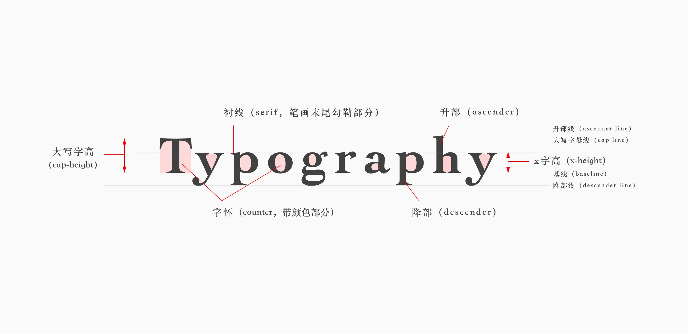
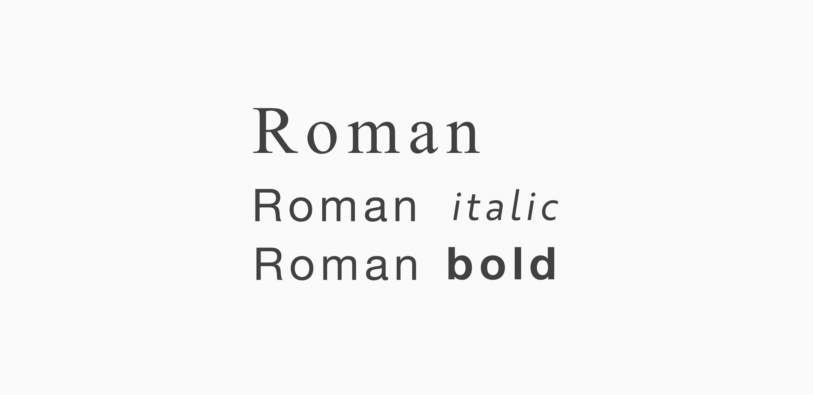
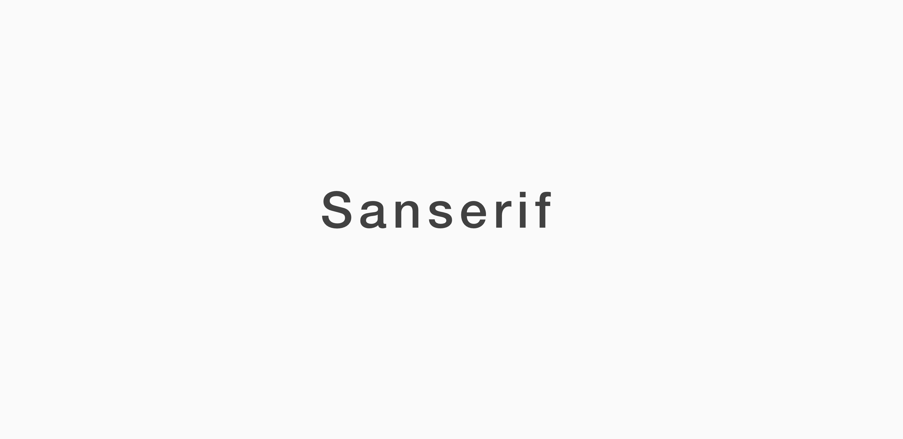
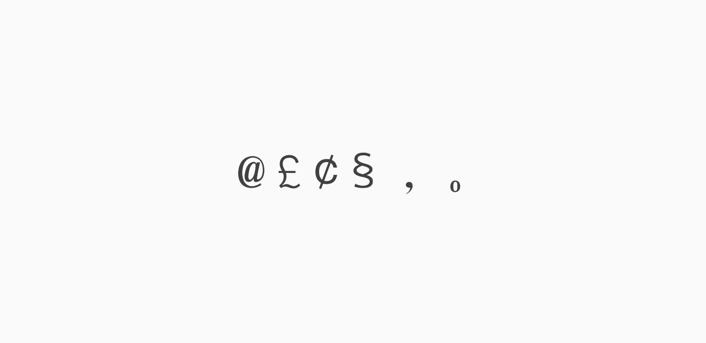
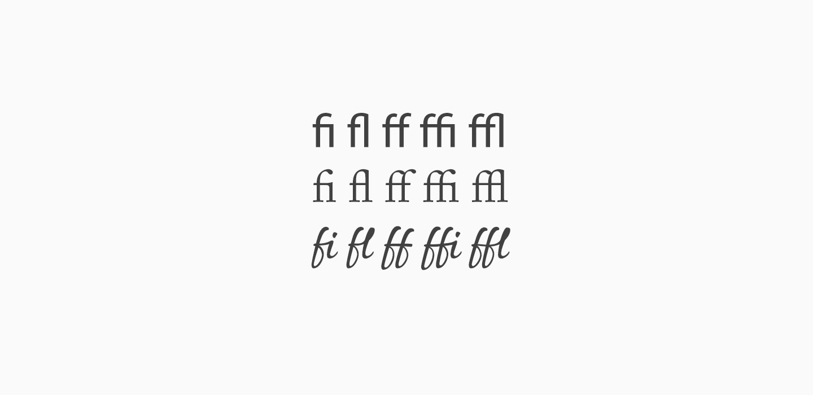
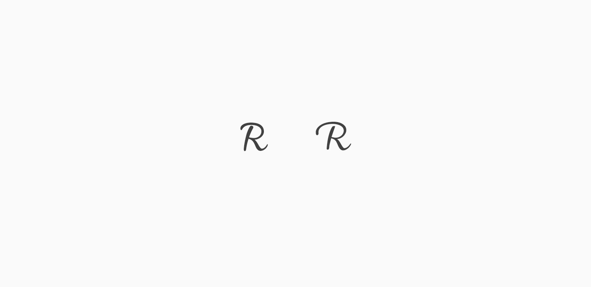
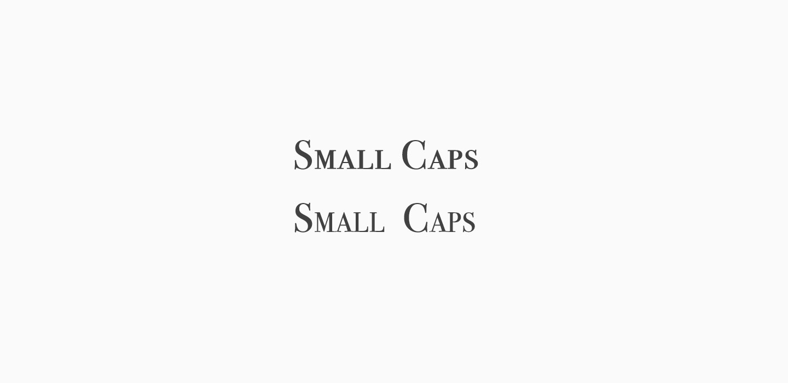

读书笔记#西文字体2
15 DEC 2017
西文字体2这本书讲解了西文字体的衬线字体无衬线字体和艺术字体的表现和运用手法，这本书写了很多关于字体设计和字体使用的优秀内容，也体现了字体的排版艺术。做了一下西文字体相关术语的笔记，后期再整理一下字体的运用艺术。
西文字体各部位名称
罗马体（roman）
罗马体是一种主要印刷字型，在英文字体里指带衬线字体。但在不同的场合会有不同的含义，如罗马体和意大利体对应的话，意思就是指罗马正体，即不倾斜的字体；而与“粗体”相提并论时说的罗马体，指标准粗细度字体。
无衬线字体（sanserif）
sans是法语“无”的意思，因此这是指没有衬线的字体。
字形（glyph）
在数码字库里除了字母以外，还有其他各种符号、空格、句号、逗号等等都是字库的构成要素。这时候称“文字”就不太合适，因此就要使用“字形”这一说法。
合字（ligature）
将两个及以上的字母组合设计而成的字符，用于改善视觉效果。通常的西文字库中的标准字形里包括fi、fl合字，而最近的Open Type字库里还备有ff、ffi、ffl等多种合字。
替换变体字（alternate）
与标准字母不同的字形设计，为了富于变化而配备的。
小型大写字母（small capital）
把大写字母大致按照小写字母x的字高而缩小制作而成，其粗细程度与大写字母协调一致。如果单纯将大写字母缩小，笔画通常会显得太细。
/___ ：P